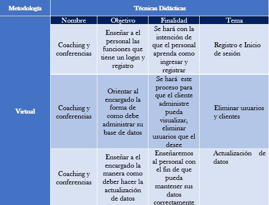

| fecha | version | descripcion | autor |
|---|---|---|---|
| 09/11/2022 | 1.0 | primera vercion | °maria castillo °ronnie rodriguez °crian gonzales °luis escorcia |
El plan de capacitación es una forma de fortalecer el conocimiento y preparar al personal de trabajo para que estos adquieran el conocimiento y las habilidades para que así estos puedan tener un buen manejo de todo el sistema de información, todo lo adquirido en búsqueda de un excelente uso del aplicativo por parte de los empleados de la microempresa. por otra parte, se les brindará conocimiento y orientación de actividades sobre la importancia de mantener una buena práctica del sistema de información, basándose en cómo manejar el sistema de ventas, recibir el pedido de un cliente a través del aplicativo, ingresar productos en el aplicativo y manejo de inventario. La capacitación es un proceso educativo para mejorar la eficiencia de los trabajadores para que éstos aporten el incremento necesario y de esa manera se alcancen índices altos de productividad y optimización en el ámbito laboral. Además, permite evitar la obsolescencia de los conocimientos del personal.
La capacitación. Es un recurso de tan vital importancia esta enfocado en forma directa al personal de empleados de la microempresa DULCERIA EL PARQUE encargados de administrar el sistema de la empresa, atender el personal, vender los productos de la microempresa, esto es importante para esta empresa en la cual la conducta y el rendimiento de estos influye en la calidad y la mejora de los procesos de ventas que brindan los empleados día a día de la dulcería el parque. Un personal motivado y enfocado en la mejora de la microempresa trabajando en equipo son los pilares fundamentales para el éxito de esta para lograr alcanzar elevados niveles de competitividad; El presente plan de capacitación es para todo el personal que trabaja en la microempresa DULCERIA EL PARQUE Como uno de los elementos para cambiar, mejorar o mantener las actitudes y el comportamiento de las personas dentro de las organizaciones ya que se busca evitar errores humanos.
3.1. Generales Preparar a los empleados de la microempresa para la manipulación del nuevo sistema de información, por lo que es de suma importancia ejecutar este plan. con el objetivo de quienes integran el equipo de trabajo, tengan las actividades necesarias para poder realizar de manera eficiente las actividades que desarrollan diariamente. Del mismo modo también se plantea que el personal a cargo de operar el software pueda interpretar y usar los manuales técnicos y de usuarios de manera correcta. 3.2. Específico ° Actualizar y ampliar los conocimientos de los movimientos de la microempresa ° Contribuir a elevar y mantener un buen nivel de eficiencia individual y rendimiento ° ayudar en la preparación de personal calificado, acorde con los planes, objetivos y requerimientos de la Empresa. ° Elevar el nivel de compromiso de los empleados con respeto a la organización ° Fortalecer la capacidad de aportar conocimientos, habilidades y actitudes, para el mejor desempeño laboral y para el logro de los objetivos institucionales. ° Satisfacer más fácilmente requerimientos futuros de la empresa en materia de personal ° Mantener la salud física y mental en tanto ayuda a prevenir accidentes de trabajo, y un ambiente seguro
Para llevar a cabo la metodología de manera virtual se le asignaran conceptos básicos de informática al personal a quien se le va a dirigir la capacitación, además de otros conceptos que no estén con claridad y posteriormente se realizara un quiz Teórico-practico
Humano: Personal necesario y correspondientes para realizar la capacitación Tecnológico: Son los dispositivos que se requerirán para llevar a cabo la capacitación (computadora, teléfono móvil o Tablet con acceso a internet, proyector de video). Físico: Se necesita un espacio o recinto donde el grupo responsable del proyecto pueda elaborar la capacitación y el personal puedan estar cómodos para recibir esta misma.